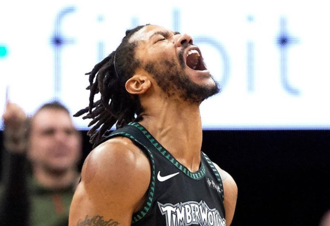
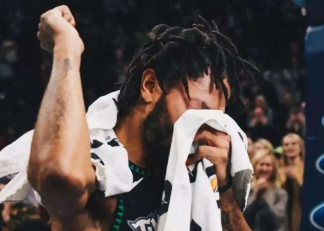
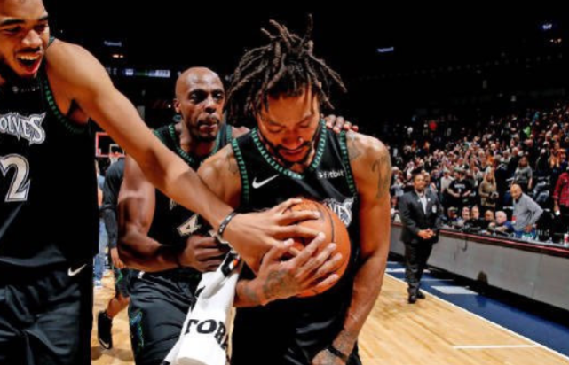
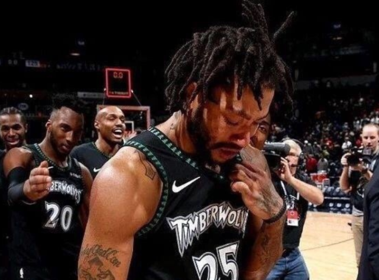

末位评论 2020-05-10
对于罗斯来说，状元加身天选之子，年少成名志得意满，他生涯的前4年已经达到了大部分球员整个职业生涯都无法企及的高度。然而伤病成为罗斯最大的痛，接踵而至的大伤，让曾经那朵风城玫瑰逐渐凋。他离开芝加哥，辗转纽约、克利夫兰，命运似乎已经向罗斯宣判，他的生涯似乎再也难以泛起涟漪。
然而在2018年10月31日的那个夜晚，罗斯重新绽放。当时的罗斯已经为森林狼效力，他本是蒂格的替补，但那场比赛蒂格因伤缺阵，罗斯进入首发。面对爵士，谁也不会料到，这场比赛的光芒盖过了那个夜晚任何比赛，原因只有一个，那就是罗斯。
罗斯首节便轰下13分4助攻2篮板2抢断，帮助森林狼领先7分。第二节比赛罗斯的表现稍微有些沉寂，但是第三节罗斯卷土重来，单节轰下19分，三节打完罗斯已经逼近40分。要知道罗斯在生涯最巅峰时期，最高得分不过42分。最后一节，面对爵士的疯狂反扑，罗斯连得6分帮助森林狼扳平比分。
双方胶着到最后时刻，罗斯一记三分将本场比赛的得分提升到44分，创下生涯新高。此后，面对球队的得分荒，罗斯突破+抛投，帮助球队在还剩30秒时领先2分。戈贝尔进攻不中，罗斯两罚全中后森林狼领先3分。最后时刻艾克萨姆出手3分被罗斯盖帽，森林狼3分险胜。
50分，128-125，完美的个人表现，完美的团队胜利。赛后，所有队友围着罗斯庆祝，而罗斯此时已经泪流满面。赛后，罗斯接受媒体采访时更是泣不成声，他对现场球迷说道：“这场比赛对我来说意味着一切，因为我真的付出了太多努力。为了球队，为了球迷，为了所有人，我一直在努力。”那个夜晚，罗斯就像坐上了时光机，回到巅峰岁月。时隔7年，玫瑰重新绽放，而且绽放得比以往任何时候都要更加绚烂！
对于很多球迷来说，罗斯意味着青春，意味着年少，那个夜晚罗斯哭了，很多人也哭了。青春的记忆在那一刻被唤醒，尘封许久的激情在那一夜被点燃。这世上没有多少幸福能够重来，很幸运，那一晚罗斯的球迷遇见了，他们仿佛遇到了那个MVP赛季的罗斯，那个突破犀利如刀的罗斯。
虽然那场比赛过去已经有一年半的时间，但每每想起，依然令人心潮澎湃。如今NBA陷入停摆，整个体育世界陷入停滞，或许你的工作生活也可能不如意，但看看罗斯吧，生活没有什么不可能。